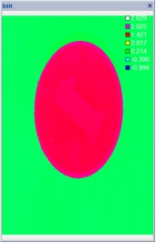
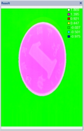
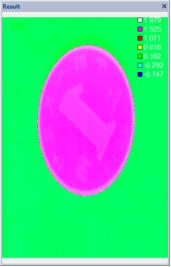

目前版本的算法，当噪点邻域为缺失像素时，直接使用滤波工具噪点滤除不掉。有个替代方案实测可行：先进行缺失像素固定值填充（一般填充一个特别大的值），再进行滤波，最后使用点云分割工具将之前填充的固定值去除，达到效果。如下图所示：

在3D测量中，深度图像滤波工具主要是将深度图像中每个像素替换为该点邻域窗口内所有像素的均值或中值，实现图像平滑、去噪的功能。
  
| 分类 | 参数名称 | 参数描述 |
|---|---|---|
| 属性窗口 | ROI类型 | 待滤波区域，分为7种：整幅图像、矩形、仿射矩形、圆形、圆环、椭圆、多边形。 |
| 滤波类型 | 分为2种：中值滤波和均值滤波。 | |
| 核尺寸 高 | 滤波核（邻域窗口）的高度。 | |
| 核尺寸 宽 | 滤波核（邻域窗口）的宽度。 | |
| 开启并行运算 | 是否开启并行运算，选择是时，算法将开启OpenMp并行计算方式，可以提升计算速度，但可能出现耗时不稳定的情况，选择否时，算法将关闭OpenMp并行计算。 | |
| 线程数百分比 | 设置并行运算的线程数百分比，有效范围为 (0, 0.75]，对应表示(0%, 75%]百分比范围。 | |
| 图像窗口 | 深度图像 | 显示待检测的深度图像，显示为伪彩色图像。 |
| 检测区域 | 在图像上显示待滤波区域。 | |
| 数据链 | 输入深度图像 | 输入待检测的深度图像。 |
| 二维线性变换 | 目标相对于模板的平移、旋转、缩放变换。 | |
| 高级界面 | 无 | 无 |
| 分类 | 参数名称 | 参数描述 |
|---|---|---|
| 监视窗口 | 输入深度图像 | 输入图像的长宽和像素大小，以及深度数据参数。 |
| 输出深度图像 | 输出图像的长宽和像素大小，以及深度数据参数。 | |
| 执行结果 | 工具执行结果。 | |
| 执行时间 | 工具执行时间。 | |
| 图像窗口 | 输入深度图像 | 显示检测的深度图像，显示为伪彩色图像。 |
| 输出深度图像 | 显示滤波后深度图像，显示为伪彩色图像。 | |
| 数据链 | 同监视窗口参数，供后续工具使用。 |
无
目前版本的算法，当噪点邻域为缺失像素时，直接使用滤波工具噪点滤除不掉。有个替代方案实测可行：先进行缺失像素固定值填充（一般填充一个特别大的值），再进行滤波，最后使用点云分割工具将之前填充的固定值去除，达到效果。如下图所示：
参见“\Samples\3D\深度图\深度图像滤波工具.gvp”。